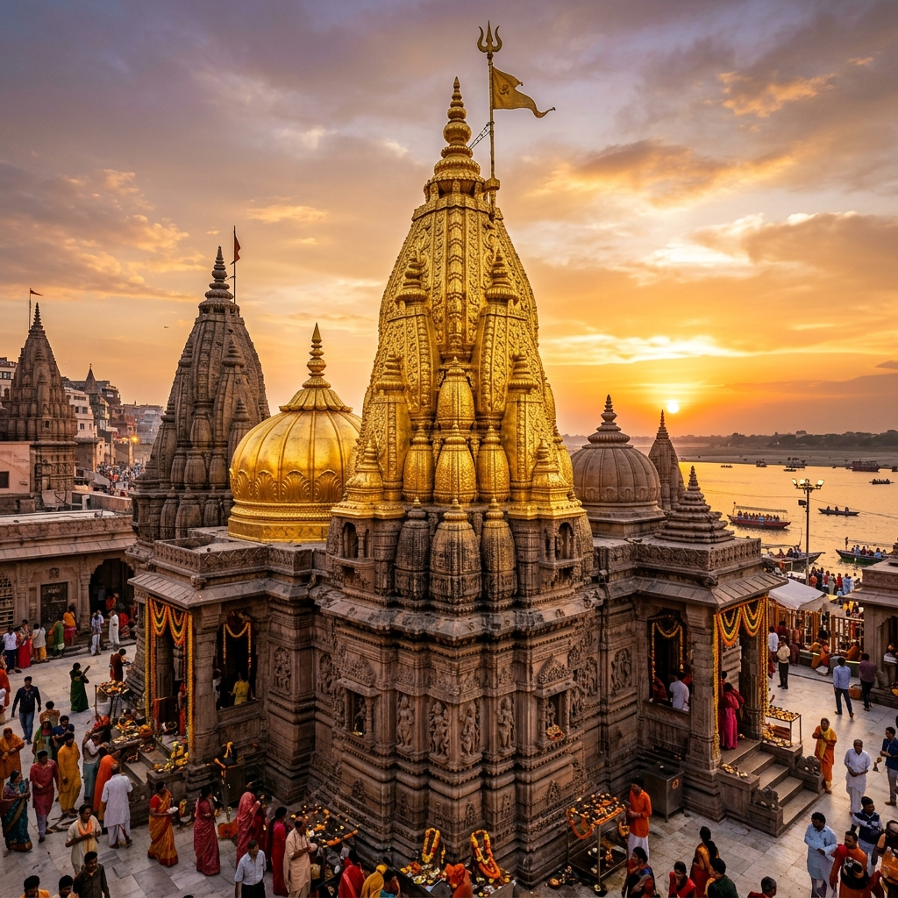

Jyotirlinga
Kashi Vishwanath Mandir
Known as the Golden Temple, it is dedicated to Lord Shiva (Vishweshwara), the supreme patron deity of Banaras. It houses one of the twelve sacred Jyotirlingas. Rebuilt in 1780 by Queen Ahilyabai Holkar of Indore, its majestic domes are plated with over 800 kilograms of pure gold. The temple stands as a beacon of ultimate liberation (Moksha) and divine light.
- Mangala Aarti: 3:00 AM - 4:00 AM
- Bhog Aarti: 11:15 AM - 12:20 PM
- Sapta Rishi Aarti: 7:00 PM - 8:15 PM
- Shayan Aarti: 10:30 PM - 11:00 PM
- General Darshan: 6:00 AM - 9:00 PM
| Architectural Style | Nagara (Classic North Indian) |
| Spiritual Sign | One of the 12 Jyotirlingas of Lord Shiva |
| Historical Builder | Rani Ahilyabai Holkar of Indore (1780) |
| Gold Donation | Maharaja Ranjit Singh of Punjab (1000 kg, 1835) |